Following the 5 Oct Issues and 12 Oct Call sessions, we're reconvening on 19 Oct to get down to action.
We'll be networking to find out how we can support each other's action. In order that we can best match you to others please:
Refine your interestsThen on 19 October:
Join the conferenceOne voice
COP26's Cate Lamb will be launching the Call to Action that we drafted together last week then Heidi Mottram will bring the first response
Many solutions
We’ll be linking together with others who share our specific climate interests. Allowing us to support each other with a host of different potential solutions.
Tuesday's Programme
| 9:00 |
Launch of the Water Climate Call to Action Cate Lamb, UNFCC COP26 High Level Climate Action Champions Lead for WaterCate Lamb is the UNFCC COP26 High Level Climate Action Champions Lead for Water. She is responsible for boosting ambition amongst the water community, showcasing water leadership and elevating the value of water in the transition to a zero carbon, resilient world. Cate has been Global Director of Water Security at CDP since 2012, where she has built the world's largest coalition of non-state actors working to deliver a water secure future. She is also a Council Member of the Science Based Target Network, an advisor to Stockholm World Water Week, and a member of UNGC's SDG Expert Network. |
|
| 9:30 |
The initial response to the call from a leading water utility - and a call to arms. Heidi Mottram CBE, Northumbrian Water Group Chief Executive OfficerChief Executive Officer of the Northumbrian Water Group Limited and Northumbrian Water Limited since 2010. This follows on from an excellent track record in the rail industry where her career began with British Rail in the mid-1980s. She progressed through a variety of senior leadership roles in British Rail and, following privatisation, in Great North Eastern Railway, Midland Mainline, Arriva Trains Northern and Managing Director of Northern Rail, the largest train operator in the UK. She was awarded an OBE in the New Year Honours list 2010 for services to the rail industry and a CBE in the Birthday Honours list 2018 for services to the water industry and business community. Mrs Mottram is currently a Board Member of Centrica, the CBI, WaterAid, the North East Local Enterprise Partnership (LEP) and is also Vice-Chair of Newcastle University Council. Under her leadership NWG achieved the Queen’s Award for Enterprise in the category of Sustainable Development in 2014 and has been the only water company to be listed on the World’s Most Ethical companies list ten times. Northumbrian Water has twice been named the UK’s Utility Company of the Year under Heidi’s leadership. The Company was also named as Water Company of the Year in 2018 and 2020 as well as being awarded the British Quality Foundation’s UK Excellence Award 2018, one of the highest accolades any business can achieve. |
|
| 10:00 |
With the benefit of our networking matcher, we’ll jump into a series of 1:1 and small group calls to discuss:
We'll complete the conference by recording our personal action pledges. These will demonstrate the breadth and depth of water sector climate action to the public and policy makers at COP26. |
Series Programme
In the meantime, you can also review the previous discussions:
-
TBA - November 2021
COP26 Live
-
9am GMT - 1 December 2021
Conclusions & Next Steps
We're looking forward to networking with you - lets change the world together.
Thanks to
Platinum sponsors:
“WaterUK has committed to Net Zero Water by 2030. Together, we will achieve this through passionate leadership, smarter collaboration and constant innovation.” – Paul Bresnan, Managing Director
Gold sponsor:
Silver sponsors:
Bronze sponsor:
Organisers:
 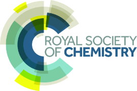
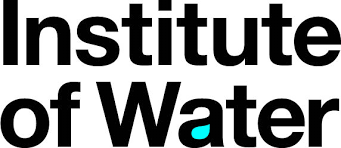
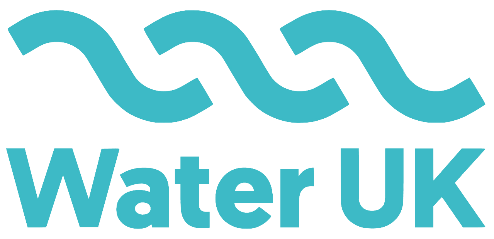
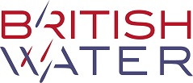
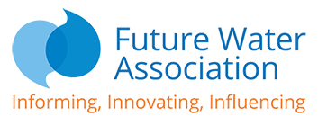
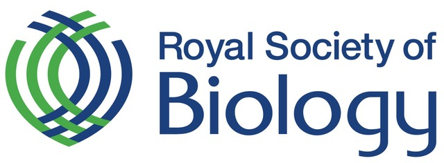
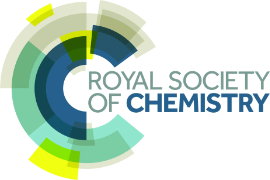
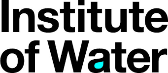
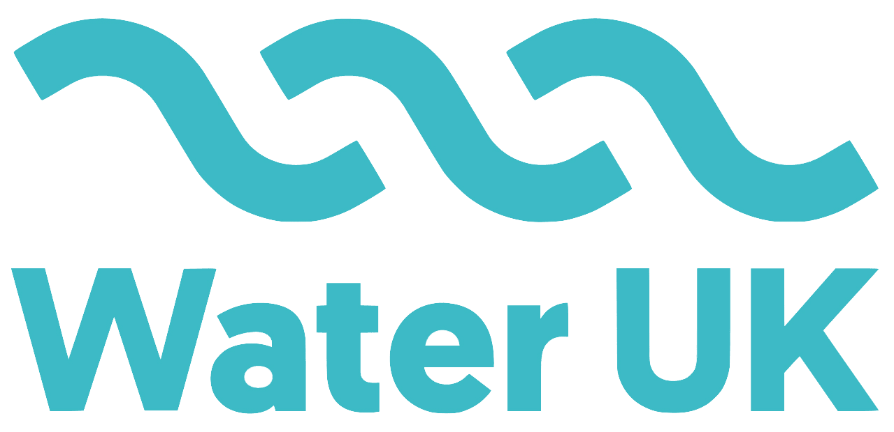
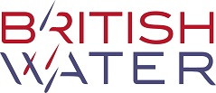
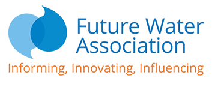
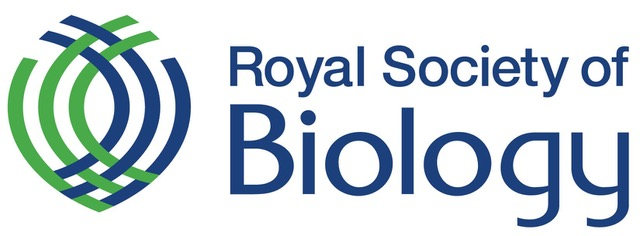
 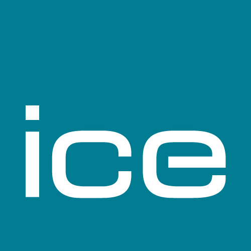
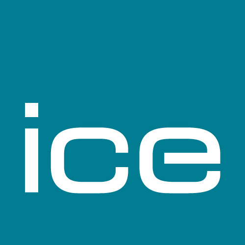